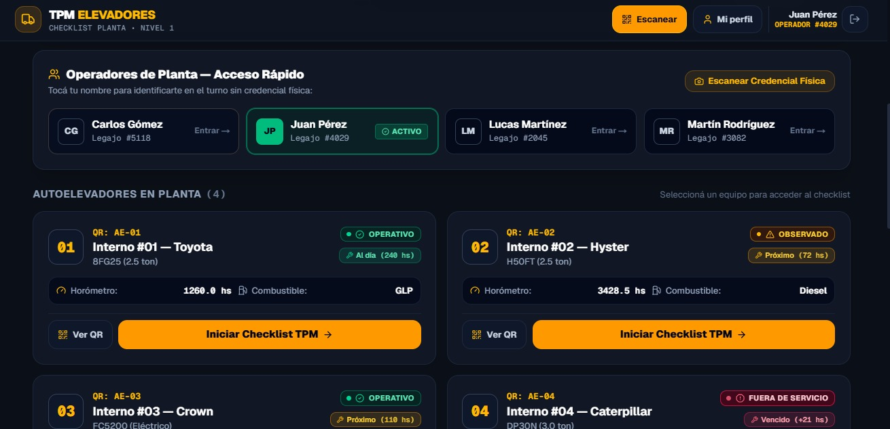
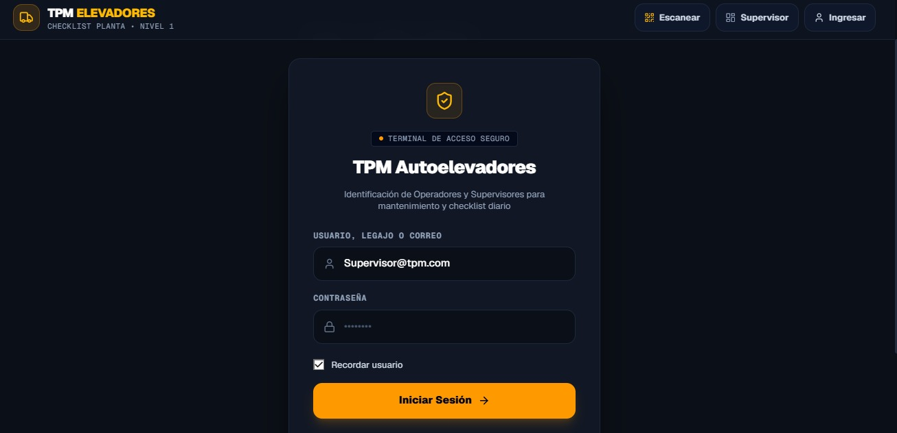
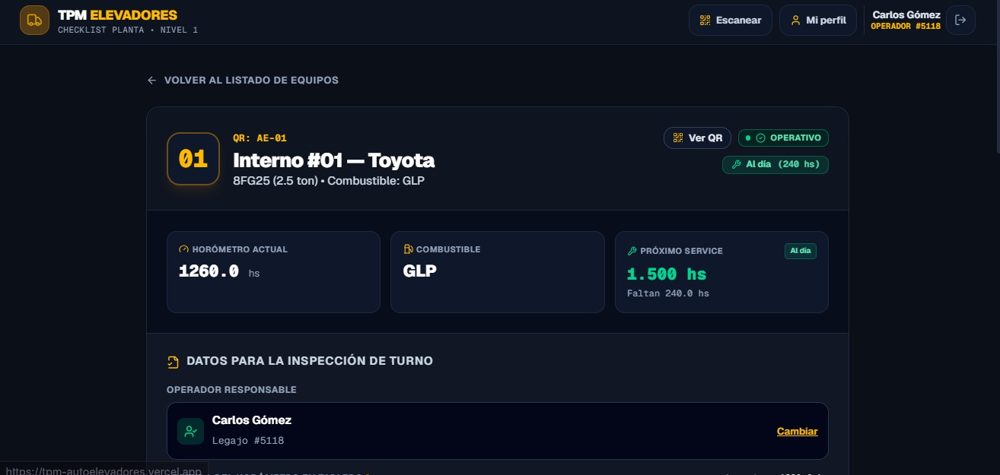
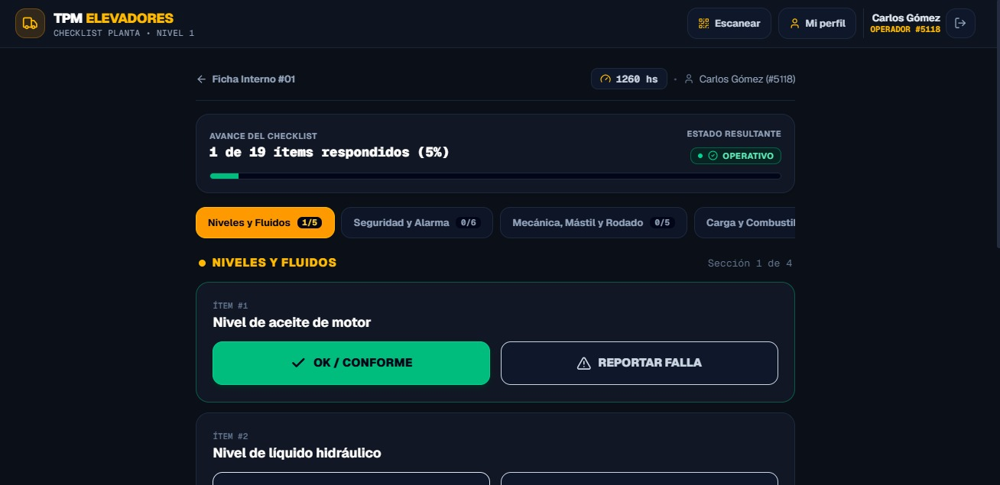

TPM Elevadores
Sistema web y móvil exclusivo de uso interno corporativo para la digitalización de inspecciones operativas (TPM Nivel 1) y mantenimiento preventivo de flotas de autoelevadores industriales en planta mediante códigos QR.

El Problema
En plantas industriales, la verificación pre-turno de autoelevadores se realizaba tradicionalmente en planillas de papel. Esto provocaba pérdida de planillas, imprecisión en las horas de uso, fallas no notificados a tiempo y falta de evidencias fotográficas ante roturas o anomalías de seguridad.
La Solución
Desarrollé un sistema web responsivo que permite a los operarios escanear desde su smartphone el código QR único del vehículo, desplegando el checklist digital de inspección previa al turno. Permite adjuntar fotografías de evidencias ante anomalías y notificar inmediatamente a los supervisores de mantenimiento.
Guía de Uso en Planta
¿Cómo usar TPM Autoelevadores?
Seguí estos pasos para realizar correctamente la inspección diaria y verificación pre-turno de tu equipo.
Identificá el autoelevador
Buscá el código QR identificado en el autoelevador que vas a utilizar. El código se encuentra en una chapa o etiqueta adhesiva visible en el chasis del equipo.
Escaneá el código QR
Presioná 'Abrir Cámara Escáner' y apuntá la cámara al código QR del equipo. También podés ingresar manualmente el número de interno o seleccionarlo del listado.
Iniciá sesión o Acceso Rápido
Ingresá con tu legajo para identificarte como operador o seleccioná tu nombre en el acceso rápido. (Nota: En caso de ser supervisor, el acceso rápido no está disponible y requiere autenticación completa).
Completá la inspección
Una vez iniciada la sesión y seleccionado el autoelevador, revisá cada punto del checklist antes de operar: fluidos, frenos, luces y elementos de seguridad.
Informá cualquier falla
En caso de que algo falle, marcá el ítem e indicá la gravedad adjuntando una fotografía. La app notificará al supervisor en tiempo real para priorizar la reparación.
Finalizá la inspección
Cuando hayas completado todos los puntos, enviá la inspección para registrar el estado del autoelevador. El estado y el horómetro del turno quedarán asentados en el sistema.
Capturas de Pantalla
Demostración de la Interfaz del Sistema

Terminal de Acceso Seguro & Autenticación
Pantalla de inicio de sesión para operarios y supervisores. En caso de supervisores, el acceso rápido queda deshabilitado por razones de seguridad.
Acceso Rápido & Listado de Autoelevadores
Selección rápida de operarios activos de turno y visualización del estado operativo en tiempo real de los vehículos en planta.

Ficha de Equipo & Registro de Horómetro
Detalle del equipo escaneado (horómetro acumulado, tipo de combustible GLP/Diesel/Eléctrico) y asignación del operario responsable.

Checklist Operativo & Reporte de Fallas
Formulario interactivo de 19 ítems (fluidos, luces, frenos). Si se detecta un problema se notifica inmediatamente a la supervisión.
Seguridad & Datos
Arquitectura & Políticas RLS
Row Level Security (RLS)
Políticas de seguridad a nivel de fila en PostgreSQL / Supabase, asegurando que cada operario edite únicamente sus inspecciones y los supervisores accedan al estado global.
Supabase Storage
Almacenamiento seguro de evidencias fotográficas vinculadas de forma inmutable al legajo del operario y al identificador de la inspección.
Roles & Permisos
Control de acceso basado en roles (RBAC) que separa la interfaz de inspección ligera para operarios del dashboard avanzado para supervisores y técnicos.
Tecnologías Verificadas
Desafíos de Desarrollo
Decisiones de Ingeniería
Acceso Ultra Rápido en Planta
Problema: Los operarios necesitan abrir el checklist al inicio del turno sin instalar aplicaciones desde app stores ni requerir procesos largos de inicio de sesión.
Decisión: Desarrollar una Web App responsiva/PWA ligera con lectura de códigos QR directos y acceso optimizado.
Resultado: Acceso inmediato en menos de 2 segundos desde cualquier dispositivo móvil.
Trazabilidad e Integridad
Problema: Asegurar que los reportes de falla contengan evidencias verificables e inalterables.
Decisión: Asociar cada informe a una captura fotográfica requerida con marca temporal del servidor.
Resultado: Trazabilidad completa de fallas para auditorías y decisiones de mantenimiento.
Resultado del Proyecto
Aplicación web de uso interno exclusivo en planta industrial, optimizada para digitalizar y asegurar la trazabilidad de inspecciones diarias.